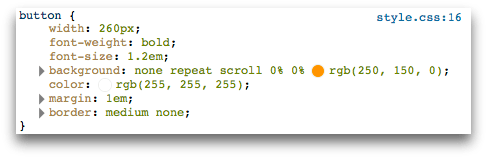
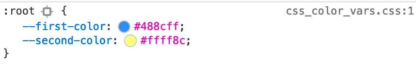
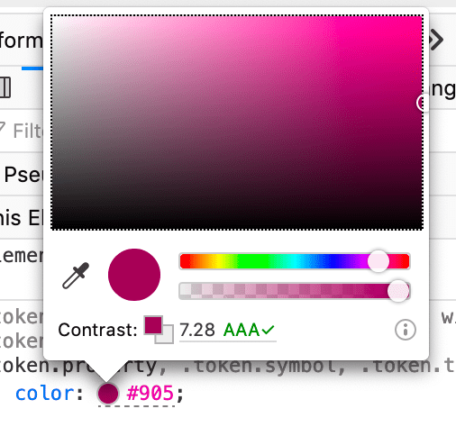
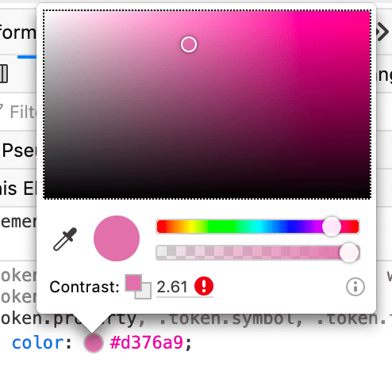

In the CSS Pane's Rules view, if a rule contains a color value, you'll see a sample of the color next to the value:
A color sample is also shown for CSS custom properties (variables) that represent colors.

If you click on the color sample, you'll see a color picker popup, enabling you to change the color:

If the color is a foreground color, the color picker tells you whether its contrast with the background color meets accessibility guidelines. Hovering the mouse over the contrast message gives a more detailed explanation.
The color picker includes an eyedropper icon: clicking this icon enables you to use the eyedropper to select a new color for the element from the page:
{{EmbedYouTube("0Zx1TN21QOo")}}
Clicking the color sample while holding down the Shift key changes the color format:
{{EmbedYouTube("gYL8-gxc1MA")}}